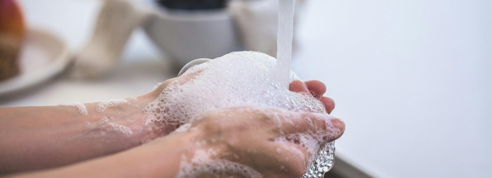

Higiene Personal.
La higiene personal es la forma en que cuidas tu cuerpo. Esta práctica incluye bañarte, lavarte las manos, cepillarte los dientes y mucho más.
Por su naturaleza, las personas están en contacto permanente con todo tipo de gérmenes
Pueden permanecer en tu cuerpo, y en algunos casos, pueden enfermarte.
Las prácticas de higiene personal pueden ayudar a prevenir enfermedades. También pueden ayudar a que te sientas bien con tu apariencia.
Ducha diaria
La preferencia personal puede determinar con qué frecuencia deseas ducharte, pero la mayoría de las personas se beneficiarán de una ducha al menos cada dos días. Ducharte con jabón ayuda a eliminar las células muertas de la piel, las bacterias y los aceites.
También debes lavarte el cabello al menos dos veces por semana. El champú ayuda a eliminar la acumulación de piel y protege contra los residuos grasos que pueden irritar la piel.
Lavarse las manos y las uñas
La importancia de dedicar el tiempo adecuado al lavado de manos
lavarse las manos salva vidas. Una correcta higiene de manos es fundamental en la prevención de enfermedades. Las manos constituyen una de las principales vías de transmisión de gérmenes, por ello, es de vital importancia conocer la manera adecuada de lavarse las manos.
Recorta tus uñas regularmente para mantenerlas cortas y limpias. Cepilla debajo con un cepillo de uñas o un paño para eliminar la acumulación, la suciedad y los gérmenes.
Cambiar ropa diario
Tanto la ropa como el calzado deben ser objeto de especial atención. Es indispensable cambiarse de ropa después de la ducha o baño. La ropa interior se cambiará diariamente.
Lavarse los dientes.
Una buena higiene dental es algo más que dientes blancos como perlas.El cuidado de los dientes y las encías es una manera inteligente de prevenir las enfermedades de las encías y las caries.
Cepilla tus dientes al menos dos veces al día durante 2 minutos.Intenta cepillarte después de despertarte y antes de acostarte. Si puedes, cepíllate también después de cada comida. Usa hilo dental entre los dientes diariamente,
y pregúntale a tu dentista sobre el uso de un enjuague bucal antibacteriano.